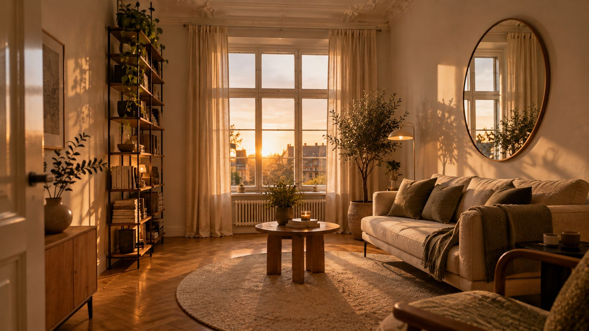

Kleine Räume größer wirken lassen
Mehr Quadratmeter gibt es nicht. Aber mit Farbe, Licht und den richtigen Möbeln wirkt fast jeder Raum luftiger, auch zur Miete.
Helle Farben, eine etwas hellere Decke, große Spiegel und Möbel auf Beinen lassen kleine Räume größer wirken. Dazu Vorhänge hoch und bis zum Boden, Licht aus vielen Quellen und weniger Kleinkram. Fast alles geht auch zur Miete.
Die 8 Tricks.
Acht Tricks, die sich kombinieren lassen. Die ersten drei kosten fast nichts.
Aufräumen und weglassen
Je kleiner ein Zimmer, desto schneller wirkt es unordentlich. Lieber wenige größere Stücke als viele kleine. Deko sparsam einsetzen.
Helle Farben wählen
Helle Wände lassen einen Raum größer wirken. Ein sanftes Weiß oder ein heller Ton ist wohnlicher als reines Weiß. Möbel in ähnlich hellen Tönen fügen sich ein, statt Platz zu besetzen. Welche Töne zusammenpassen, zeigt der Ratgeber Wandfarbe wählen, wie viel du brauchst, der Farb-Rechner.
Die Decke etwas heller streichen
Ist die Decke ein wenig heller als die Wände, wirkt sie höher. Das ist der einfachste Trick für niedrige Räume.
Große Spiegel aufhängen
Ein großer Spiegel wirft Tageslicht zurück und lässt den Raum tiefer wirken. Achte darauf, was sich spiegelt: eine ruhige Fläche ist besser als ein volles Regal.
Möbel auf Beinen
Schlanke Möbelfüße zeigen mehr Boden und wirken luftig. Ein Bett auf Füßen schafft zusätzlich Platz für Kisten darunter.
Die Höhe nutzen
Hohe Schränke und Regale bis unter die Decke bringen viel Stauraum auf wenig Grundfläche. Geschlossene Fronten wirken ruhiger als offene Fächer.
Vorhänge hoch und bis zum Boden
Vorhänge, die bis zum Boden reichen und hoch aufgehängt sind, strecken den Raum. Helle, durchscheinende Stoffe lassen viel Licht herein. Breite und Länge berechnet der Vorhang-Rechner.
Licht aus vielen Quellen
Ein gut ausgeleuchteter Raum wirkt größer. Nutze mehrere Lampen statt einer Deckenleuchte, indirektes Licht für Tiefe und eine Leuchte, die die Decke anstrahlt. Mit einem Dimmer passt du die Stimmung an.
Ein Bett mit Schubladen, eine Bank mit Stauraum, ein Klapptisch an der Wand. In sehr kleinen Wohnungen sparen Möbel mit mehreren Aufgaben am meisten Platz.
Deine Checkliste.
Hak ab, was du schon gemacht hast. Gespeichert wird nur in deinem Browser.
Typische Fehler.
Viele kleine Möbel
Fünf kleine Möbel wirken voller als zwei große. Lieber ein großes Sofa als Sofa, Sessel und zwei Hocker.
Der Teppich ist zu klein
Ein kleiner Teppich in der Mitte zerschneidet den Boden in Stücke. Größer wirkt der Raum, wenn wenigstens die vorderen Beine der Möbel darauf stehen. Welche Größe passt, sagt der Teppich-Rechner.
Der Spiegel zeigt Chaos
Ein Spiegel vor einem vollen Regal verdoppelt die Unruhe. Häng ihn so, dass er ein Fenster, eine helle Wand oder eine Lampe zeigt.
Kurze Vorhänge
Vorhänge, die über der Fensterbank enden, lassen das Fenster und den Raum kleiner wirken. Bodenlang wirkt ruhiger und höher.
Nur eine Deckenlampe
Ein einzelnes Licht von oben lässt die Ecken dunkel, und dunkle Ecken rücken näher. Zwei oder drei Lampen auf verschiedenen Höhen öffnen den Raum.
Zur Miete.
Fast alle Tricks gehen ohne Bohren oder lassen sich beim Auszug rückgängig machen.
- Farbe
- Helle, neutrale Wände sind beim Auszug meist ohnehin gefragt. Was für Wandfarben bei Mietwohnungen gilt, steht unter Schöner wohnen zur Miete.
- Spiegel
- Ein großer Standspiegel braucht kein Loch in der Wand.
- Vorhänge
- Klemmstangen oder Klebehaken für leichte Stoffe kommen ohne Bohren aus.
- Licht
- Steh- und Tischleuchten verändern den Raum mehr als jede neue Deckenlampe.
Für mehr Luft im Raum.
Spiegel, Stauraum und Licht. Die Links führen zu einer Suche bei AmazonAnzeige
Spiegel und Licht
Stauraum
Stoffe
Häufige Fragen.
Ist reines Weiß am besten?
Nicht unbedingt. Ein sanftes Weiß oder ein sehr heller Ton wirkt genauso groß, aber wärmer und weniger steril.
Darf ein kleiner Raum dunkle Farben haben?
Ja, als Akzent. Eine dunkle Decke lässt einen Raum zwar niedriger, aber oft größer wirken. Wer es ausprobieren will, beginnt mit einer einzelnen Wand.
Welcher Wohnstil passt zu kleinen Räumen?
Helle, ruhige Stile wie Skandinavisch oder Japandi. Beide leben von wenigen Dingen und viel Licht.
Offene Regale oder Schränke?
In kleinen Räumen eher geschlossene Schränke. Offene Fächer zeigen alles und wirken schnell voll. Wenn Regal, dann mit wenigen, ausgewählten Dingen.
Quellen.
Alle 4 Quellen anzeigen
- sanier.de: 10 Tipps, um einen kleinen Raum größer wirken zu lassen (aktualisiert 28.07.2025) sanier.de
- OBI Magazin: Kleine Räume einrichten (05.01.2024) obi.at
- t-online: Kleine Räume einrichten und optisch größer wirken lassen (aktualisiert 03.08.2020) t-online.de
- wohnglück: Kleine Räume größer wirken lassen wohnglueck.de
Geprüft am 28.10.2026.